Prêmios · França
Prix Goncourt 2026
Philippe Jaenada venceu o 124º Goncourt com L'inconnue du Quai de Javel (6 votos a 3 sobre Sylvain Prudhomme). A reportagem recupera a história do prêmio e cobre a rentrée 2026.
Lauréat Jaenada · 03/11/2026 (Drouant) · 6×3 no 1º turno · lista oficial
Arqueologia do prêmio
Origem e testamento. O prêmio nasce em 1903, quando os irmãos Edmond e Jules de Goncourt já estavam mortos, mas deixaram um testamento (1896) pedindo uma “Académie” de dez membros — escritores — para premiar anualmente “the best and most substantial imaginative work in prose” em francês. A primeira edição consagrou Force ennemie, de John-Antoine Nau. Desde então, o Goncourt funciona como memória institucionalizada de um projeto naturalista e documental do século XIX convertido em tribunal da ficção francesa.
Dez euros, um cheque simbólico. O lauréat recebe cerca de dez euros; o dinheiro real circula nas livrarias. Bourdieu observou que prêmios deste tipo convertem julgamento estético em efeito econômico tardio: o rótulo “Goncourt” altera tiragens, reimpressões e traduções. A NielsenIQ citada pela imprensa francesa em 2025–2026 (centenas de milhares de exemplares para o vencedor anterior) mostra o mecanismo ainda ativo — não porque o júri “venda” livros, mas porque sincroniza crítica, mídia e distribuição num calendário (rentrée → listas → Drouant).
Drouant, meio-dia, ritual. Desde 1914, o anúncio ocorre no restaurante Drouant, no 2º arrondissement de Paris: júri à mesa, votação, comunicado à imprensa. O lugar não é cenário neutro; é parte do ritual de consagração — gastronomia, foto, metáfora de “república das letras” reunida em torno de uma mesa. Quem estuda cânone pode ler o Goncourt como performance pública do campo literário francês, no mesmo dia em que outros prêmios (Renaudot, Femina etc.) disputam atenção.
Académie Goncourt hoje. O colégio eleitoral reúne dez académiciens (sucessores de Goncourt, Colette, Gracq, Michel Tournier, entre outros lugares na história do prêmio). Desde maio de 2024 a presidência está com Philippe Claudel. O site oficial publica calendário, comunicados e atas — fonte primária para arqueologia do dispositivo, não só para a edição corrente. Fonte
República Mundial das Letras — o que observar. Casanova descreve um espaço transnacional desigual: centros (Paris, Londres, Nova York…) impõem ritmo e critérios; autores periféricos chegam tarde ou entram traduzidos. O Goncourt 2026 ilustra três camadas:
- Gatekeeping nacional: listas progressivas (16 → 8 → 4), exclusão de Orélien por plágio e suspeita de IA — o júri define o que conta como “literatura escrita por mulheres e homens”.
- Concentração editorial: quatro finalistas de 2026 saíram do ecossistema Madrigall (Gallimard, Flammarion, Minuit, L’Arbalète) — o prêmio conversa com oligopólio, não só com estética.
- Recepção crítica: cada ficha abaixo cita imprensa que traduz o romance para comparações de cânone (Cem anos de solidão, Maigret, Homero) — sinal de como a obra entra na circulação global.
Édition 2026 — do calendário ao lauréat
A Académie Goncourt presidida por Philippe Claudel conduziu a 124ª edição. A primeira seleção, em 2 de setembro, listou 16 romances (nove de homens, sete de mulheres). Em 25 de setembro retirou C’était ça ou mourir, de Thélyson Orélien (Grasset), citando plágio e relatos segundo os quais o livro seria “muito provavelmente, em larga medida, o produto de uma inteligência artificial”; o comunicado reafirmou que o prêmio coroa “a literatura escrita por mulheres e homens”. A lista passou a oito títulos em 6 de outubro e a quatro finalistas em 27 de outubro.
Em 3 de novembro, no Drouant, Philippe Jaenada venceu no primeiro turno com seis votos contra três de Sylvain Prudhomme (De l’autre côté du lac, Minuit). Claudel destacou que o romance torna visível uma vítima “invisibilizada” pela polícia de 1949. Jaenada sucede Laurent Mauvignier (La maison vide, 2025), cujo efeito comercial a imprensa francesa ainda mede em centenas de milhares de exemplares. Fonte
Primeira seleção (16 títulos)
Boris Bergmann, Minotaure
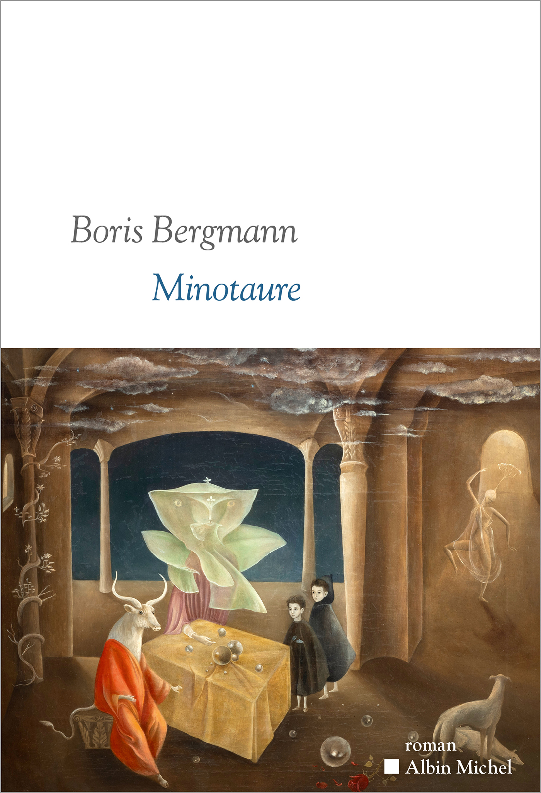
Albin Michel, 2026.
Romance autobiográfico em que Bergmann, nascido em 1992, conta a busca pelo pai, um psiquiatra que partiu antes de seu nascimento, e o encontro tenso que ele forçou em Bordeaux aos 22 anos. A Paris Match descreve um livro de vários fios: a procura dos pais, o retrato da associação Aides, de luta contra a aids, onde os pais do autor se conheceram, e uma homenagem à mãe. Entre os homens gays da associação o menino encontrou pais substitutos. Segundo a revista, o mito do Minotauro serve ao autor para passar do íntimo ao universal. Fonte
Louise Chennevière, Faire la peau
P.O.L, 2026.
O livro acompanha Louise, que depois de trinta anos de humilhações decide romper com a mãe. Em entrevista à RTS, a autora, que também é musicista e cantora, disse que a violência materna segue entre as mais tabus por causa do “fantasma do amor materno absoluto” e que tratar dela é delicado para uma feminista. A emissora suíça explica o duplo sentido do título: “fazer a pele” é matar simbolicamente a mãe e também fazer para si uma pele própria. O romance desloca para a relação entre mãe e filha a investigação sobre violência e corpo que, segundo a RTS, atravessa a obra de Chennevière. Fonte
Ananda Devi, Chronique d’un royaume perdu
Grasset, 2026.
Saga ambientada em Le Bouchon, aldeia isolada da ilha Maurício, terra natal da autora, que acompanha quatro gerações desde a escravidão, entre a família branca dos Dumontais, donos de uma usina de açúcar, e a linhagem dos Félicité. O crítico Jean-Remi Barland, do La Provence, chamou o livro de uma espécie de Cem anos de solidão em versão mauriciana. O romance também foi selecionado para os prêmios Renaudot e Giono. Para o curso, a comparação mostra a crítica francesa lendo uma autora mauriciana pela régua de um clássico latino-americano. Fonte
Sonia Devillers, Le fabuleux piano
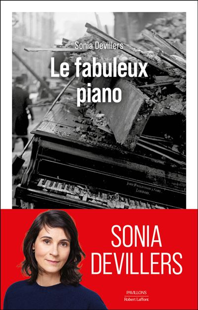
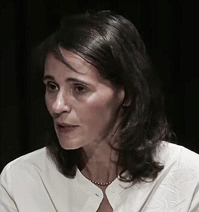
Robert Laffont, 2026.
Procurando o piano que a avó deixou em Bucareste quando a família foi obrigada a sair da Romênia, em 1961, Devillers encontra outro instrumento desaparecido: um Érard de concerto, número 68037, da família Enoch, editores de música em Paris, levado pelos nazistas em 1943 e nunca recuperado. A ActuaLitté descreve o livro como um “récit-enquête” (relato-investigação) documentado sobre objetos espoliados, mortos sem túmulo e a música como depósito de memória. A presença de um relato de investigação documental numa lista de romances interessa a quem estuda as fronteiras de gênero que os prêmios aceitam. Fonte
Anne Godard, Nous aussi
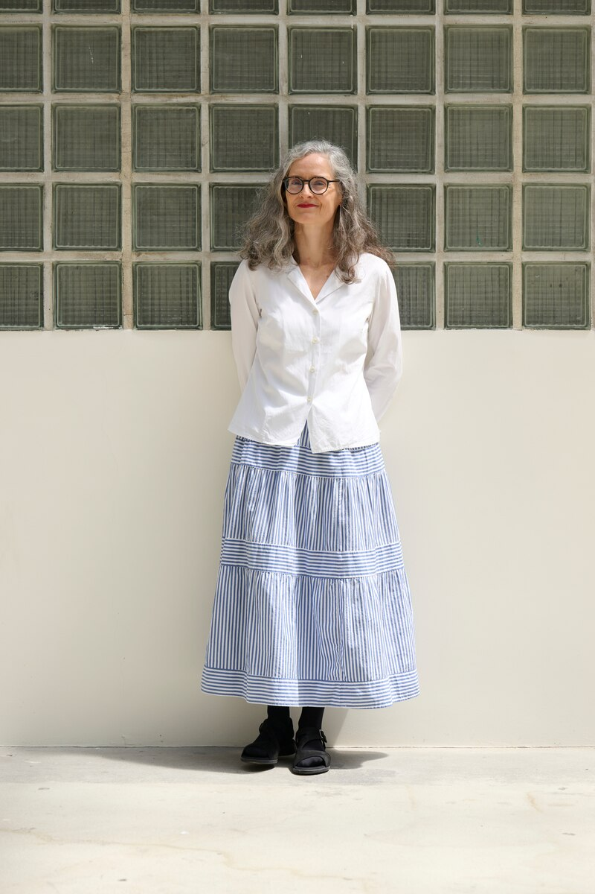
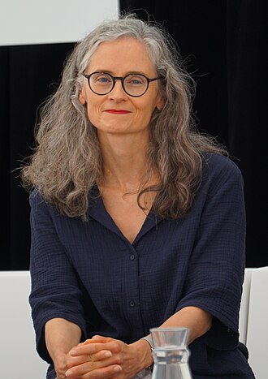
Actes Sud, 2026.
Terceiro romance de Godard, passado na alta burguesia parisiense: uma família que vive num mesmo prédio de bairro nobre e passa os verões num casarão nos Alpes chamado de Château. Segundo o La Libre Belgique, nas duzentas primeiras páginas a autora não escreve uma vez “eu”; a narração dissolve o indivíduo num “on” coletivo e prende-o ao clã e à sua máquina de transmitir patrimônio e normas. O jornal belga classificou o livro de “magistral” e destacou os capítulos curtos e a escrita lapidar. No título da resenha, o jornal resume o livro como a exposição da mecânica de um “entre-soi” sufocante, o fechamento de um grupo social em si mesmo. Fonte
Olivier Grondeau, Joseph dans la nuit
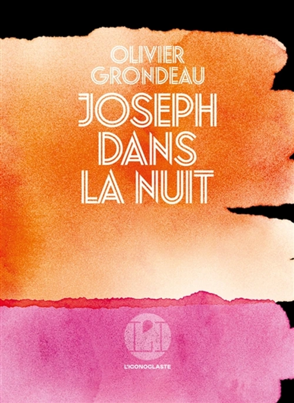
L’Iconoclaste, 2026.
Preso no Irã em 12 de outubro de 2022, Grondeau passou 887 dias na prisão até ser libertado em 17 de março de 2025. O livro trata dos 72 dias de custódia sob a autoridade do Ministério da Inteligência iraniano, com interrogatórios, medo e a resistência interior sustentada por sonhos, companheiros de cela e pela poesia de Hafez. A ActuaLitté destacou a maneira como o texto torna sensível a lógica do arbitrário. Com ele, o testemunho de um ex-refém entra numa seleção de romances. Fonte
Yannick Haenel, La solitude des professeurs est infinie
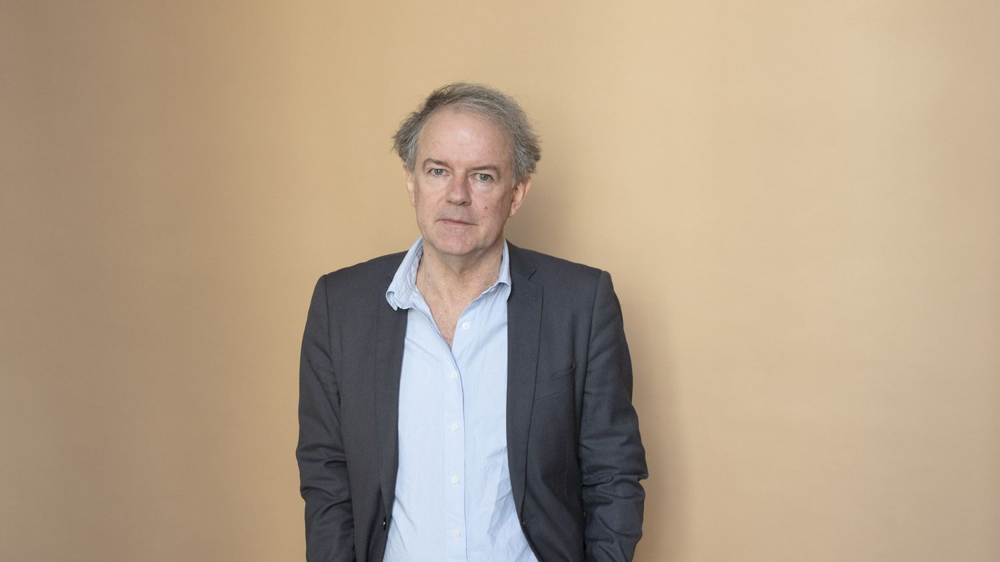
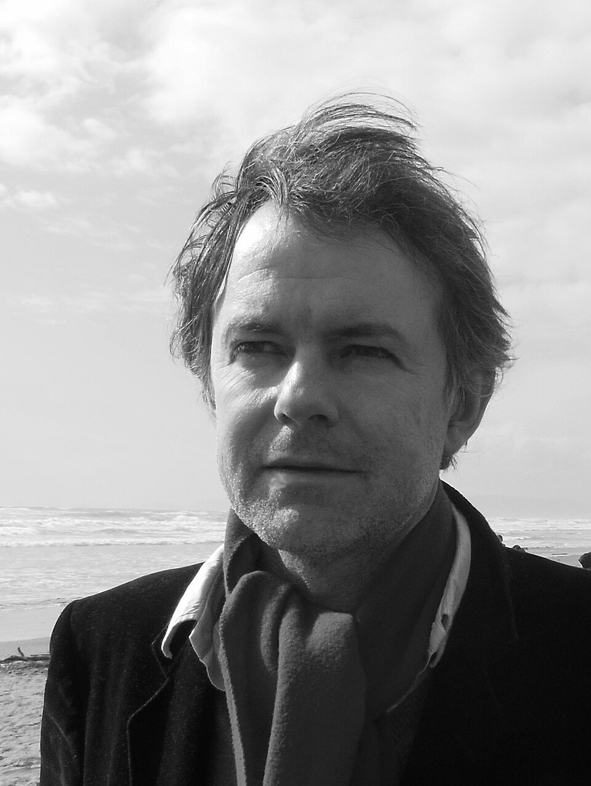
Gallimard, 2026.
Haenel foi professor de francês por quinze anos na periferia de Paris, e o romance segue seu duplo literário, Jean Deichel, jovem professor num colégio de Mantes-la-Jolie no início dos anos 1990, do entusiasmo à depressão. A franceinfo leu uma “epopeia abrasiva” sobre o ofício docente e uma ode à literatura e à transmissão. Num trecho citado pela emissora, o professor insiste, contra o inspetor, em dar Duras, Kafka, Stevenson, Flaubert e autores vivos como Pierre Michon e Annie Ernaux. A cena põe dentro da ficção a disputa sobre o que se lê na escola, tema próximo de quem estuda cânone. Fonte
Lilia Hassaine, Je
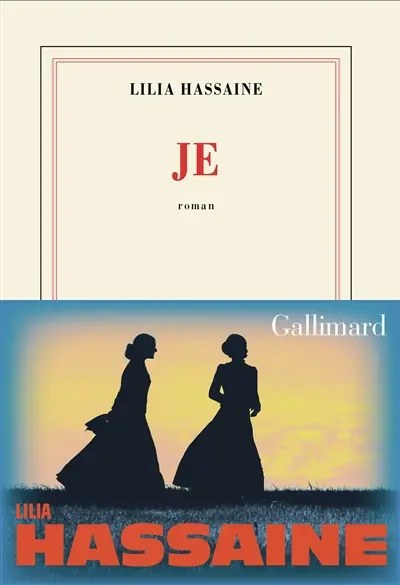
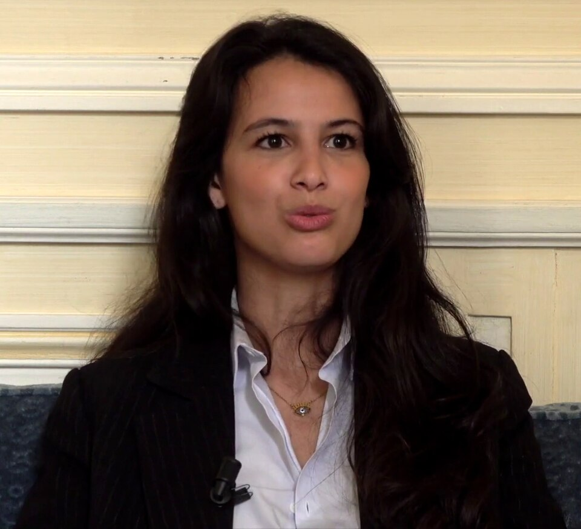
Gallimard, 2026.
Quarto romance de Hassaine, retoma Jane Eyre, de Charlotte Brontë, do ponto de vista de Bertha Antoinette Rochester, a primeira mulher de Mr. Rochester, trancada num sótão por sua suposta loucura. Segundo a RFI, a personagem deixa de ser algoz para ser vítima de um homem violento e manipulador. Em entrevista à emissora, a autora disse ter partido de uma história pessoal e preferido mostrar o que há de invariável nas violências de gênero a escrever um testemunho. A reescrita de um clássico a partir de sua personagem marginal é o ponto que interessa à discussão sobre cânone. Fonte
Philippe Jaenada, L’inconnue du Quai de Javel
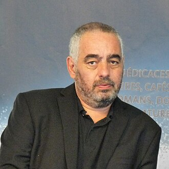
Flammarion, 2026.
Vencedor do Femina em 2017 com La Serpe, Jaenada volta ao fait divers com a investigação do assassinato de Louise Cansot, modelo dos pintores de Montparnasse, encontrada estrangulada no cais de Javel, em Paris, na noite de 6 para 7 de setembro de 1949. O criminoso nunca foi preso. A franceinfo conta que o autor reconstrói o destino da jovem bretã que chegou a Paris aos 16 anos para trabalhar como empregada e recorre a Maigret, o comissário de Simenon, como contraponto ficcional à polícia real. A emissora situa o livro na veia de crimes a elucidar que o autor explora desde La Serpe. Fonte
Jean-Yves Jouannais, Une forêt
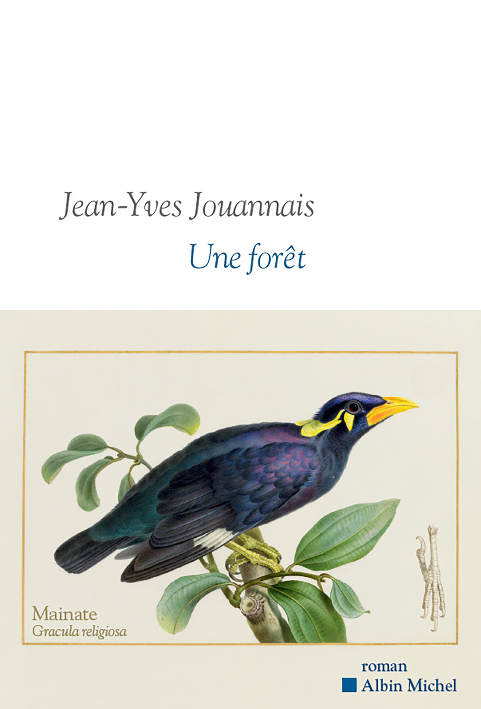
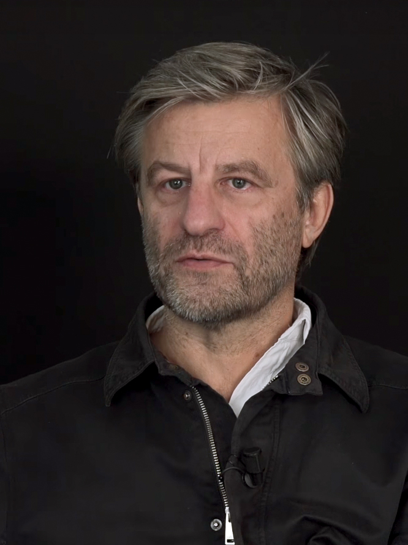
Albin Michel, 2026.
Livro curto, de 110 páginas, passado na Alemanha derrotada de 1947, sobretudo em Bremen: os mainás de uma floresta passaram a transmitir entre si a melodia de um hino nazista, e a desnazificação precisa decidir o que fazer com eles. A resenha da En attendant Nadeau trata a premissa como absurda na aparência e séria nos dilemas, comparável aos casos que juristas discutem com argumentos reais. O livro saiu no início do ano: a revista o resenhou em fevereiro, meses antes da rentrée de setembro. Fonte
Emma Marsantes, N’efface pas mes cercles
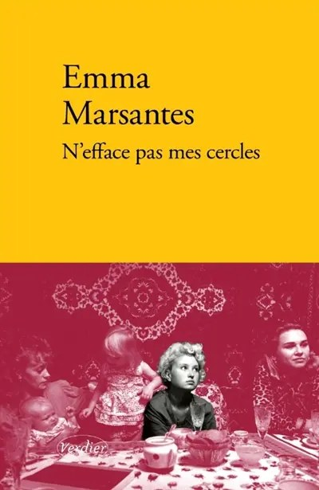
Verdier, 2026.
Em 1980, uma mulher se suicida num apartamento abastado; a partir desse fato, uma narradora remonta a história da família por várias décadas. Segundo a resenha do Cult.news, patriarcado, guerra, colonização, incesto e violência sexual passam pelos corpos, casamentos e silêncios das personagens. O site destaca a recusa dos efeitos da grande saga familiar, com escrita seca e sem revelações finais, e adverte que essa confiança no leitor pode tornar o livro exigente. Fonte
Clémentine Mélois, Choses que je croyais perdues
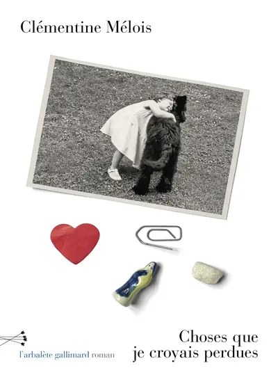
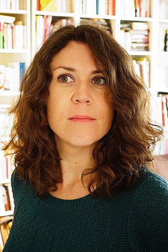
L’Arbalète/Gallimard, 2026.
Durante dois dias e uma noite, Émilie, professora de gravura recém-separada, embala os objetos do apartamento que dividia com Tristan, e cada um deles abre um fragmento de memória. A franceinfo apresenta Mélois como escritora e artista plástica em busca constante de pesquisa formal, e lembra que em 2024 ela publicou Alors c’est bien, sobre a morte do pai. A emissora descreve um romance de fantasia sobre a ruptura amorosa e a memória dos objetos. O inventário de objetos como estrutura narrativa é o dado formal que a franceinfo associa à pesquisa da autora. Fonte
Sylvain Prudhomme, De l’autre côté du lac
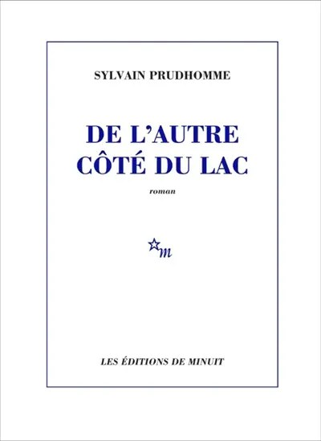
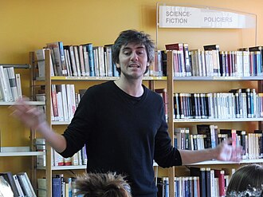
Minuit, 2026.
Depois de Coyote (2024), Prudhomme escreve sobre Paola, fotógrafa que explora a reserva florestal de um lago remoto dos Alpes, convive com arqueólogos num sítio neolítico e desaparece depois que o corpo de um alpinista é encontrado. A franceinfo leu um romance atmosférico, na fronteira do policial, sobre a tentação da vida selvagem longe das cidades conectadas. O livro sai pela Minuit, a mesma editora de La maison vide, de Laurent Mauvignier, vencedor do Goncourt de 2025. Fonte
Olivier Rolin, La Guerre éternelle
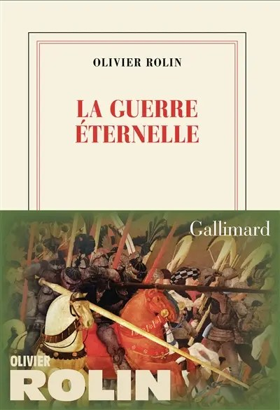
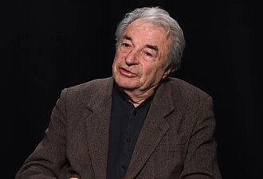
Gallimard, 2026.
Rolin parte de Troia rumo a Gaza, Sarajevo e Mariupol, convencido, como escreve, de que “a guerra de Troia é a mãe de todas as guerras”. Para a franceinfo, o livro é ao mesmo tempo história, mitologia e diário de viajante, e passa por episódios como o massacre de Nanquim, em 1937, lido como réplica moderna da queda de Troia. A emissora situa o livro numa onda de releituras de Homero que inclui Giraudoux e Pierre Michon. A presença de um texto híbrido entre ensaio e relato de viagem testa os limites do que o júri aceita como romance. Fonte
Patrice Trigano, Bataille au procès
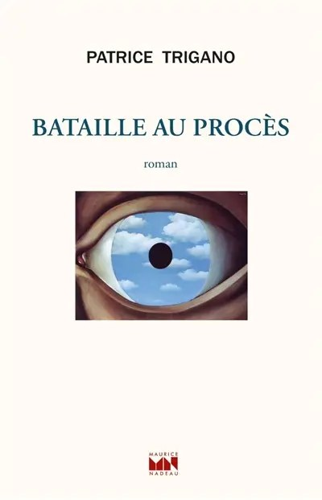
Maurice Nadeau, 2026.
Livro de 140 páginas sobre o processo contra o editor Jean-Jacques Pauvert, acusado em 1956 por publicar o Marquês de Sade, com Georges Bataille como personagem principal e o advogado Maurice Garçon em cena. A L’Express admitiu que o título tinha escapado à crítica antes do anúncio e, depois de lê-lo, julgou-o interessante para a história literária, mas dispensável numa rentrée de boa safra. O caso interessa a quem estuda como uma lista de prêmio pode lançar um livro que a crítica ainda não tinha notado. Fonte
Finalistas e lauréat (27/10 → 03/11)
Em 27 de outubro a Académie ressaltou quatro títulos, todos de casas do grupo Madrigall (Gallimard, Flammarion, Minuit, L’Arbalète/Gallimard). Claudel repetiu que a “máquina” não entra no prêmio após a exclusão de Orélien. Anne Godard (Nous aussi), Sonia Devillers (Le fabuleux piano) e Olivier Rolin (La guerre éternelle) — com boa recepção na rentrée — ficaram de fora.
| Autor | Romance | Editora | Desfecho 03/11 |
|---|---|---|---|
| Philippe Jaenada | L’inconnue du Quai de Javel | Flammarion | Lauréat (6 votos) |
| Sylvain Prudhomme | De l’autre côté du lac | Minuit | 3 votos |
| Yannick Haenel | La solitude des professeurs est infinie | Gallimard | — |
| Clémentine Mélois | Choses que je croyais perdues | L’Arbalète/Gallimard | — |
Fichas completas acima. Anúncio oficial: Académie Goncourt · cobertura: franceinfo · finalistas: Le Monde, 27/10